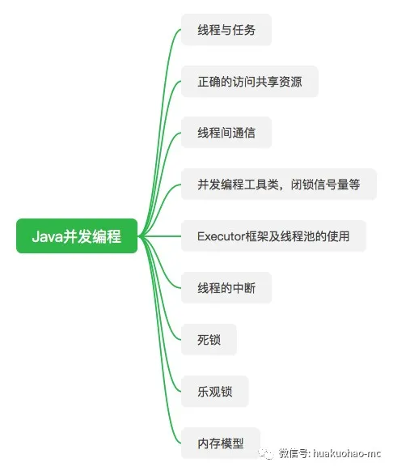

原创：花括号MC(微信公众号：huakuohao-mc)。关注JAVA基础编程及大数据，注重经验分享及个人成长。
这是Java并发编程系列的第一篇文章，因为并发编程涉及的内容太多，很难用一篇或者两篇文章就说清楚，所以会分成多篇进行讲述。
针对并发编程，我大概列了一份简要的提纲，后面的文章基本会按照这个顺序来写。具体能不能全部写完，我也不太清楚；主要是因为自己的能力水平有限，加之写技术文章确实很占用休息时间。
简要提纲

正文开始
提到并发编程，很多人会想到多线程；希望让多个线程共同完成一项任务，以提高生产效率。
所以要聊并发编程之前，就要先说一下什么是线程，要说什么是线程就需要说一下什么是进程。
进程：在现代操作系统中，每一个独立运行的程序都是一个进程，比如运行中的word，微信等等都是一个独立进程。
线程：在现代操作系统中，线程也叫轻量级进程，每个进程里面可以包含多个线程。CPU资源可以在多个线程之间不断切换，仿佛所有线程在并行执行。每个线程都有自己的计数器，堆栈，和局部变量等属性。这些线程也能够访问共享的内存变量。这将成为日后阻碍我们写出健壮且安全的并发程序的最大障碍。
如何理解线程和进程
上面介绍的进程和线程，对于某些人来说可能比较抽象，为了方便大家更好的理解线程和进程关系，我们可以做这样一个比喻。一个进程相当于一条运行中的汽车生产线，主要任务是生产汽车；生产线上有很多工人，每个工人负责不同的工作，有的给汽车拧螺丝，有的给车刷漆。每个工人就是一个线程。汽车就是共享变量。
任务和线程的关系
在Java里面，任务和线程是两个完全独立的概念，所谓的线程就是你通过 Thread thread = new Thread() 方式创建的一个线程，如果你只是这样创建一个线程，那么什么意义都没有。因为这个线程什么都不会做，这条语句的意义，仅仅是创建了一个线程。你可以理解成，只创建了生产线上的一个工人，但是没给工人安排任务。
我们创建线程的目的显然是为了更高效的完成一些任务。所以我们需要把任务和线程进行关联。Java里面的任务是通过Runnable或者Callable接口来表达的。线程是驱动任务的媒介，必须将线程和任务进行绑定才有意义，他们才能各自发挥价值，真正的做到一加一大于二的效果。如果你不理解我说的这段话，没关系，下面会通过一些代码示例帮助大家理解线程和任务之间的关系。
如何创建线程
创建线程的方式很多人都会说有两种，一种通过继承Thread类来实现，另外一种是实现Runnable接口。从某种角度来看，这么说是没有错，但我更愿意说只有一种方式。因为Thread类也实现了Runnable接口。所以归根到底还都是通过实现Runnable接口来描述任务，然后将任务和线程进行绑定。
什么都不做的线程
创建一个线程并启动其实很简单，只需要两行代码。但是下面的线程什么都做不了。因为我们没有让他跟任何任务关联。1
2
3
4//创建线程
Thread thread = new Thread();
//启动线程
thread.start();
会说 hello world 的多线程
上面新建的线程，什么工作都做不了，显然不是我们想要的，下面我们再来创建一个线程，这个线程会打印出线程名字，并且说一句hello world。1
2
3
4
5
6
7Thread thread = new Thread(){
public void run(){
System.out.println(Thread.currentThread() + "hello world!");
}
};
thread.start();
上面的代码，new了一Thread对象，并且重写了run方法，将要执行的业务逻辑写到了run方法里面。这样就建立了线程和任务的关系。
通过继承实现自己的Thread
我们也可以通过继承的方式自定义一个Thread，如下：1
2
3
4
5
6
7
8
9
10public class HelloThread extends Thread {
private String name;
public HelloThread(String name){
this.name = name;
}
public void run(){
System.out.println( Thread.currentThread() + " hello " + name);
}
}
通过HelloThread()创建线程，并启动。1
2Thread thread = new HelloThread("Frank");
thread.start();
通过Runnable接口定义任务
上面示例都是通过重写Thread类的run方法，来完成业务逻辑的描述。我们也可以通过实现Runnable接口的方式，来实现业务逻辑的描述。
1 | public class Task implements Runnable { |
将Runnable和Thread进行关联，让Thread驱动Runnable.1
2
3
4//创建线程，并绑定相应的业务逻辑
Thread thread = new Thread(new Task());
//启动线程，让线程驱动任务
thread.start();
使用Executors将线程和任务进行绑定
上面讲解的样例代码，在实际生产上很少用到，生产用的最多的是JDK1.5以后开始提供的Executor并发框架。这里先放一段代码示例，先简单感受一下，后面还会有专门的文章进行介绍。1
2
3
4
5
6
7//创建一个容量为2的线程池
ExecutorService exec = Executors.newFixedThreadPool(2);
//向线程池提交5个任务
for (int i = 0; i < 5; i++){
exec.execute(new Task());
}
exec.shutdown();
与线程相关的一些方法
yield()
yield这个单词在英语里面有放弃，停止争论的意思，所以当我们执行Thread.yield();方法的时候,表示当前线程愿意尝试放弃CPU资源，但是否放弃不确定。这个方法在日常工作中很少用到，主要用于debug,或者测试。
sleep()
sleep这个单词大家应该很熟悉，睡眠的意思。所以当我们执行Thread.sleep(1000); 表示当前线程休眠1秒钟，然后继续执行。
join()
join这个单词有连接，加入的意思。所以当调用join()方法的时候，表示当前线程会等待调用join()这个方法的线程执行完成之后在继续执行。这么说会比较抽象，下面我写个简单的例子，让各位感受一下。
定义一个任务，该任务接收一个外部传入的线程，并调用传入线程的join()方法1
2
3
4
5
6
7
8
9
10
11
12
13
14
15public class JoinTask implements Runnable{
private Thread thread;
public JoinTask(Thread thread){
this.thread = thread;
}
public void run() {
try {
thread.join();
} catch (InterruptedException e) {
e.printStackTrace();
}
System.out.println(Thread.currentThread() + "currentTime " + System.currentTimeMillis());
}
}
在main方法里面启动两个线程
1 | Thread thread1 = new Thread(){ |
这段代码的输出结果为1
2Thread[Thread-0,5,main]currentTime 1588752684516
Thread[Thread-1,5,main]currentTime 1588752685516
从结果可以看出线程2等待线程1执行结束后，才继续执行。大家可以把join()方法注释掉之后在运行一下，感受一下join()的作用。
这个方法理论上可以实现简单的任务间协作(实际生产很少这样用)，比如洗完盘子才能进行烘干。烘干线程要等待洗盘子线程结束才能开始工作。
结束
好了，这篇文章就写到这里了。本篇的核心要点就是理解线程和任务的关系，知道如何将线程和任务建立联系。至于文章最后提到的几个方法，大家知道一下就OK，真实生产上如果真的要用的话，一定要特别清楚你想要做什么。下一篇按照计划会写锁相关的内容。
推荐阅读：
Java8的Stream流真香，没体验过的永远不知道
Awk这件上古神兵你会用了吗
手把手教你搭建一套ELK日志搜索运维平台